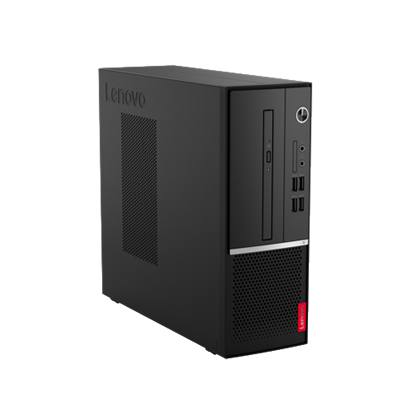

Computador
Notebook IdeaPad S145 (15" Intel)
R$ 3.149,99

Com aproximadamente 1,85 kg, o ideapad S145 é fácil de transportar! Possui design leve e compacto. Além disso, é equipado com até a 10ª geração dos Processadores Intel® Core™. Perfeito para acompanhar seu ritmo, não importa a tarefa e onde esteja. Alguns modelos, possuem memória Intel® Optane™ que otimiza sua experiência de uso, se adaptando continuamente ao seu jeito de usar o notebook e acelerando seus aplicativos mais utilizados.
ComprarLenovo V50s
R$ 3.239,99
O desktop compacto Lenovo V50s é rápido, responsivo e eficiente. Combina a potência dos mais recentes processadores Intel® de 10ª geração com a velocidade da memória DDR4 para maximizar a produtividade. Versátil e seguro, o equipamento também oferece opções gráficas dedicadas e praticidade com portas USB frontais.
Comprar